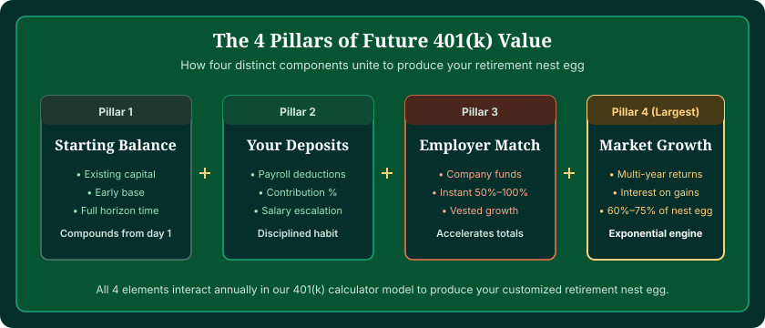
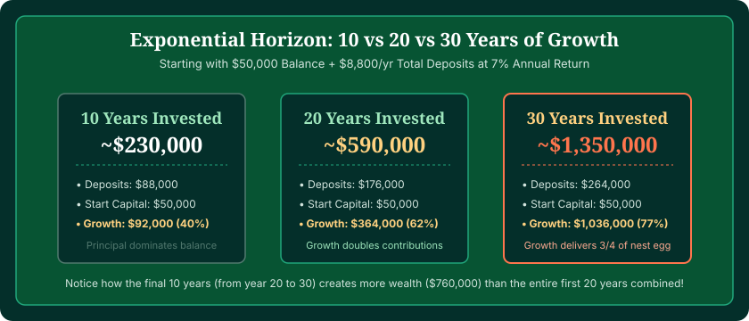

To calculate how much will my 401(k) be worth at retirement, you must evaluate four core financial components: your current balance, regular employee and employer contributions, the number of compounding years remaining, and your expected annual rate of return. While a standard $50,000 balance contributing $1,000 monthly can grow to over $1.6 million across 30 years at 7%, you can project your exact numbers in seconds using our interactive 401(k) Calculator.
Unlike a static savings account where you simply add monthly deposits, a 401(k) is an investment engine. Every dollar deposited buys fund shares that generate dividends, interest, and capital appreciation. Those earnings are automatically reinvested, creating a snowball effect where growth begins producing its own growth.
In this guide, we break down the exact mathematics of future value, compare realistic 10-year, 20-year, and 30-year balance trajectories, examine the massive impact of employer matching, and explore how inflation alters what your future balance can actually buy.
Calculate Your Future 401(k) Balance
Model multiple contribution rates, salary growth, employer matching formulas, and inflation-adjusted purchasing power.
Open 401(k) Calculator →The Four Building Blocks of Future 401(k) Value
Every future balance projection rests on four fundamental levers. Adjusting any single lever changes the final outcome significantly:
- Starting Balance (Principal): The money you have already saved today. This money has the longest runway to compound without needing to be earned again.
- Monthly or Annual Contributions: The combined sum of your elective payroll deferrals plus any employer matching contributions deposited every pay period.
- Investment Horizon (Time): The number of years until you begin withdrawing funds. Time is the mathematical exponent in compound growth; adding 5 years to your horizon can increase your final balance by 30% to 50%.
- Annualized Rate of Return: The net percentage your invested portfolio gains each year after accounting for administrative fees and fund expense ratios.

The Future Value Formula Explained
Behind every professional retirement calculator is the mathematical formula for the Future Value (FV) of an Annuity with a Lump Sum Principal:
The first half of the formula, P × (1 + r)^t, calculates what your existing balance will grow into if you never contributed another penny. The second half, PMT × [ ((1 + r)^t - 1) / r ], calculates what your ongoing recurring contributions will grow into with accumulated interest.
For example, if you start with $40,000 at age 35 and contribute $10,000 per year ($833/month) for 30 years at a 7% average return:
- Your existing $40,000 grows to: $40,000 × (1.07)^30 = $304,490
- Your $10,000 annual deposits grow to: $10,000 × [ ((1.07)^30 - 1) / 0.07 ] = $944,608
- Total Future Value at age 65 = $304,490 + $944,608 = $1,249,098
Notice that while you only deposited $340,000 in actual cash over those 30 years ($40k initial + $300k deposits), compounding generated over $909,000 in pure growth!
10-Year, 20-Year, and 30-Year 401(k) Growth Scenarios
To see how time accelerates growth, consider the following table. It models how different starting balances and monthly savings amounts expand over 10, 20, and 30 years, assuming a balanced 7% annualized return:
| Starting Balance | Monthly Contribution | Total Deposits (30 Yrs) | Balance at 10 Yrs | Balance at 20 Yrs | Balance at 30 Yrs |
|---|---|---|---|---|---|
| $10,000 | $500 ($6k/yr) | $190,000 | $105,420 | $293,178 | $662,642 |
| $30,000 | $800 ($9.6k/yr) | $318,000 | $201,310 | $538,060 | $1,200,670 |
| $50,000 | $1,000 ($12k/yr) | $410,000 | $270,950 | $705,580 | $1,561,020 |
| $100,000 | $1,500 ($18k/yr) | $640,000 | $493,890 | $1,268,750 | $2,792,440 |
| $150,000 | $2,000 ($24k/yr) | $870,000 | $687,410 | $1,743,580 | $3,822,540 |

How Employer Matching Boosts Your Future Nest Egg
Employer matching is one of the most powerful wealth-building tools available to working professionals. When an employer matches 50% or 100% of your contributions up to 5% or 6% of your salary, they are not just giving you immediate cash—they are handing you productive assets that compound forever.
Consider an employee earning $75,000 whose employer offers a standard 50% match on contributions up to 6% of salary:
- Employee contributes 6%: $4,500/year ($375/month)
- Employer adds 50% match: $2,250/year ($187.50/month)
- Total annual 401(k) funding: $6,750/year
Over a 30-year career at a 7% average return:
- The employee's contributions alone grow to: $425,000
- The employer's matching contributions grow to: $212,500
- Combined 401(k) value: $637,500
By taking advantage of the match, the employee added more than $212,000 in free retirement wealth that required zero personal out-of-pocket dollars beyond the base 6% contribution. For a deeper breakdown of matching mechanics, explore our guide on 401(k) calculators with employer match.
Future Value vs. Today's Dollars: Accounting for Inflation
One of the most common surprises for retirement planners is understanding the difference between a nominal balance and purchasing power in today's dollars.
If your 401(k) calculator tells you your account will be worth $2,000,000 in 30 years, that number sounds enormous today. However, due to inflation—which has historically averaged between 2.5% and 3.0% annually—a cup of coffee, a gallon of milk, or health insurance will cost significantly more in 30 years.
The Purchasing Power Discount Formula
To convert a future nominal value into today's purchasing power, divide by the cumulative inflation factor:
Today's Purchasing Power = Nominal FV / (1 + i)^t
At a 2.5% annual inflation rate over 30 years, $2,000,000 in the future has the purchasing power of approximately $953,500 today. Always ensure your retirement plan accounts for this purchasing power discount!
What Rate of Return Should You Assume in Projections?
Because stock markets fluctuate year to year, picking an appropriate rate of return is essential for realistic planning:
- Conservative (5.0% to 6.0% nominal): Appropriate for savers with heavy bond allocations, individuals within 5 to 7 years of retirement, or those modeling conservative economic growth.
- Moderate / Balanced (6.5% to 7.5% nominal): The standard industry baseline for a diversified 80/20 or 70/30 stock-and-bond index allocation over a 20+ year horizon.
- Aggressive (8.0% to 9.5% nominal): Suitable for young savers in their 20s and 30s invested in 100% equity portfolios (e.g., S&P 500 or Total Stock Market index funds). Note that the historical annualized return of the S&P 500 since 1957 has been roughly 10% nominal (around 7% real after inflation).
How to Use the Interactive 401(k) Calculator
To get the most accurate estimate of your future nest egg, follow these steps in our verified 401(k) Calculator:
- Input Your Ages: Enter your current age and your planned retirement age to establish your compounding timeline.
- Enter Current Balance & Salary: Input your current 401(k) balance and current gross annual salary.
- Set Your Contribution & Match: Enter your contribution percentage alongside your employer's matching formula.
- Select Return & Salary Escalation: Choose your expected investment return rate (e.g., 7%) and expected annual salary growth rate (e.g., 2% to 3%).
- Inspect the Output: Review your projected total nest egg, total lifetime contributions, employer match total, milestone trajectory by age, and purchasing power badge.
Frequently Asked Questions
How much will my 401(k) be worth when I retire?
Your future 401(k) balance depends on your starting principal, monthly employee and employer contributions, annual rate of return, and total years invested. For example, starting with $50,000 at age 35, contributing $1,000 per month (total employee plus match), and earning an average 7% annual return yields approximately $1.6 million by age 65.
How do I calculate how much my 401(k) will be worth?
Future 401(k) value is calculated by combining two financial formulas: the compound growth of your existing balance [FV = P × (1+r)^t] plus the future value of a regular annuity for ongoing monthly deposits [FV = PMT × (((1+r)^t - 1) / r)]. Using an online 401(k) calculator performs this exact calculation instantly.
How much will my 401(k) grow in 10, 20, or 30 years?
At a 7% average annual return with $800/month in total contributions starting from $30,000: in 10 years it reaches approximately $201,000; in 20 years it reaches approximately $538,000; and in 30 years it reaches over $1.2 million. Notice that the last 10 years generate twice as much growth as the first 20 years combined due to compounding.
What rate of return should I use for a 401(k) calculator?
Most financial planners recommend using a nominal annual return between 6% and 8% for a diversified stock and bond allocation. If modeling in inflation-adjusted 'today's purchasing power' dollars, use a real return between 4% and 5%.
Does employer matching affect my future 401(k) value?
Yes, dramatically. An employer match represents immediate 50% to 100% additional principal that compounds alongside your deposits. Over 30 years, an employer contributing $3,000 annually adds more than $283,000 in additional future value at a 7% return.
Does inflation reduce the value of my future 401(k)?
Yes. A nominal balance of $1,500,000 in 30 years will not buy what $1,500,000 buys today. Assuming a standard 2.5% to 3.0% annual inflation rate, prices double roughly every 24 to 28 years. That is why looking at your projection in inflation-adjusted 'today's dollars' is vital.